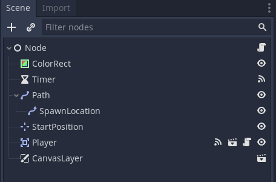
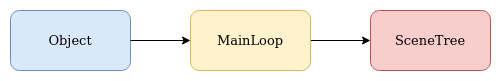
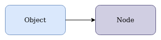
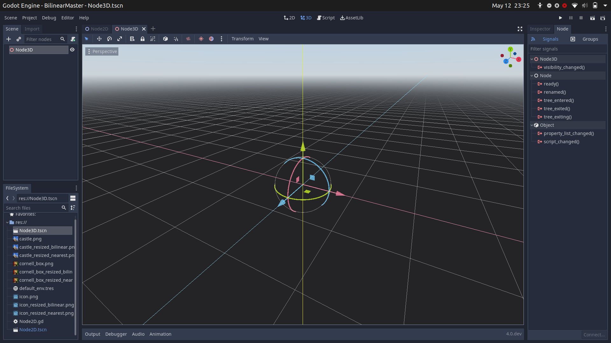
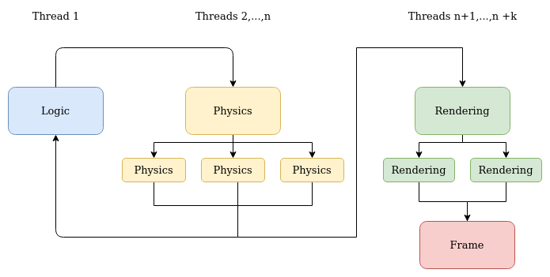
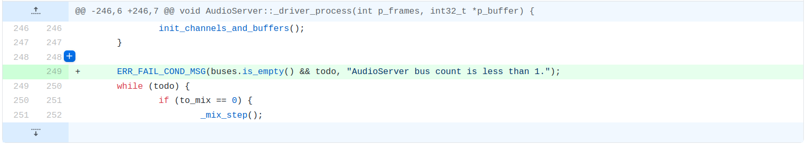
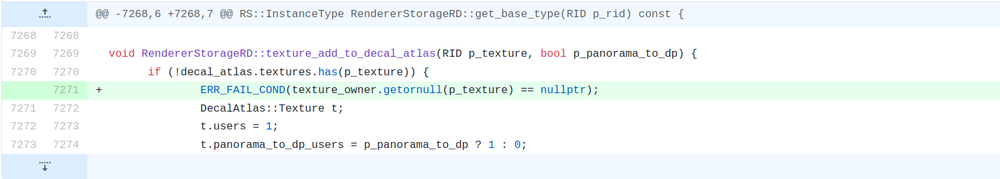

A Deep Dive Into the Godot Game Engine
Table Of Contents
1. Introduction2. Scene Model2. 1 MainLoop2.2 SceneTree2.3 Node2.4 Analysis2.4.1 ECS2.4.2 Godot3. Core Constructs3.1 Variant3.2 Object3.3 ClassDB4. GDNative4.1 Usage4.2 Under the Hood4.2.1 Loading and Making Use of Custom Shared Libraries4.2.2 Core API4.2.3 NativeScript APISMTSolver Bindings Demo Project5. Editor5.1 Initialization of Editor Node5.2 Running a Game From the Editor5.3 Editor Plugins5.4 Analysis6. Servers6.1 Resources and Resource IDs6.2 Servers During Game Iterations6.3 RenderingServer6.4 Code Patches#45972 Godot crashes when instancing AudioServer#46828 Executing PointLight2D.set_texture crashes Godot8. References
1. Introduction
Godot[1] is a free and open source 2D and 3D cross-platform game engine. It offers a complete development environment for creators to design, program and export games. Initially created by Juan Linietsky and Ariel Manzur for in-house game development[2], Godot was open sourced in 2014[3] and has since gained widespread popularity in the game development world, with more than 1400 contributors and 2 million unique installs to date[4].

Godot is particularly known for the intuitive 'scene-system' it provides to structure games, which allows creators to define a game as a tree of scenes, each of which consists of several 'nodes' that interact with each other to produce complex behavior. To create this scene tree, users can use its full-fledged editor, which provides both What-You-See-Is-What-You-Get (WYSIWYG) features and an IDE with a custom language (GDScript) for scripting. The editor and scene system are in turn powered by a set of 'servers' which offer versatile 2D and 3D physics and rendering features.
There is currently extensive documentation available for users of the engine, but documentation of the engine's internals for potential contributors is sorely lacking. With nearly 4 million lines of code, deducing how a particular feature works or knowing where to look in order to fix a bug can be difficult for the unacquainted. This report aims to rectify part of that gap, by deconstructing the source code underlying some of the most important features of Godot. It will take a detailed look at the implementation of Godot's core data types, its scene system, scripting language bindings, editor, and server abstractions.
2. Scene Model
From a high level perspective, Godot games consist of scene graphs, which arrange the logical components of a game ('nodes') into a tree structure. These scenes can be saved and instantiated as subtrees of other graphs, giving users modularity and flexibility. For example, a simple 'Snake' game could consist of a scene that contains various GUI and display nodes, a timer node, a path node, and a player scene. The player scene could in turn consist of various visual and collision nodes to represent the snake.

Godot enforces a separation between the high level game constructs that make up the scene graph and the lower level processing which enables these high level features. The scene graph system makes use of servers that work at the lower level to create physics, rendering or other effects, with the help of APIs provided by these servers. This separation means that in theory, this scene model could be swapped out for a different game design paradigm if desired.
At its core, a scene contains a SceneTree object. This object contains a tree of child nodes, and inherits from the MainLoop class, which exposes functionality to update properties of the nodes in each iteration of the game.

2. 1 MainLoop
Contrary to its name, the MainLoop class does not actually contain a loop itself. Instead it merely defines the virtual functions initialize(), physics_process() and process(), which are in turn called by the main 'while' loop of a Godot game. initialize() is called at the start of a game, while physics_process() and process() are called in every iteration and physics time step respectively. Any class that inherits from MainLoop can thus implement these functions in order to achieve various effects in each iteration.
MainLoop also contains an optional reference to a script. The end user can provide a script that defines physics_process or process in order to override the engine implementation:
xxxxxxxxxxbool MainLoop::physics_process(float p_time) { if (get_script_instance()) { return get_script_instance()->call("_physics_process", p_time); } ...2.2 SceneTree
SceneTree inherits from MainLoop and contains a Window node that serves as the root node. This root node contains a single child node, the current_scene, which is just a Node object that can in turn have other children Nodes, forming a tree.
xxxxxxxxxx// scene_tree.hWindow *root = nullptr;Node *current_scene;xxxxxxxxxx// scene_tree.cppvoid SceneTree::_change_scene(Node *p_to) { ... if (p_to) { current_scene = p_to; root->add_child(p_to); }}When the game's while loop calls SceneTree::process(), it in turn emits notifications which end up causing the process() functions of the objects in the tree to be invoked in turn.
xxxxxxxxxxbool SceneTree::process(float p_time) { ... _notify_group_pause("process_internal", Node::NOTIFICATION_INTERNAL_PROCESS); _notify_group_pause("process", Node::NOTIFICATION_PROCESS); ...2.3 Node

Node is the base class for most higher level constructs in Godot, and Node objects make up the bulk of the scene tree described earlier. At its core, it is simply a multiway tree data structure, with pointers to its parent and children Node(s).
xxxxxxxxxx Node *parent = nullptr; Vector<Node *> children;The class contains various functions to manipulate its subtree or gain more information about the tree it is part of. It also defines various functions that will be called in response to changes in tree, such as entering or exiting it. Subclasses of Node can override these functions to enable various behavior when objects are added or moved from one tree to another.
Node is designed such that users can override the process() or physics_process() functions by attaching scripts with the corresponding scripting functions defined. When Node objects get notifications from its parent SceneTree or elsewhere in each iteration, it gets pointers to the instances of the corresponding process() or physics_process() functions in the user's scripts and invokes them:
xxxxxxxxxxvoid Node::_notification(int p_notification) { switch (p_notification) { case NOTIFICATION_PROCESS: { if (get_script_instance()) { Variant time = get_process_delta_time(); get_script_instance()->call(SceneStringNames::get_singleton()->_process, time); } } break; ...Godot is shipped with a whole set of predefined classes that inherit from Node, such as GUI labels and Paths. These classes extend Node with their own properties, methods and signals. Since Node inherits from Godot's base Object class, these higher level classes can easily register its methods with a global class database (ClassDB). They can do this by implementing the _bind_methods() function to register information and pointers to its methods with the static ClassDB object.
xxxxxxxxxxvoid Node::_bind_methods() { GLOBAL_DEF("editor/node_naming/name_num_separator", 0); ProjectSettings::get_singleton()->set_custom_property_info("editor/node_naming/name_num_separator", PropertyInfo(Variant::INT, "editor/node_naming/name_num_separator", PROPERTY_HINT_ENUM, "None,Space,Underscore,Dash")); ... ClassDB::bind_method(D_METHOD("add_sibling", "sibling", "legible_unique_name"), &Node::add_sibling, DEFVAL(false)); ClassDB::bind_method(D_METHOD("set_name", "name"), &Node::set_name); ...Doing this allows any subclass of Node to expose an interface that lets other parts of the engine examine the class and call its methods. Details of how this is possible will be described in future sections.
2.4 Analysis
2.4.1 ECS
Several game or simulation engines use variants of an Entity-Component-System (ECS) Architecture. Entities refer to unique objects, usually represented by a simple numeric ID. Each entity may possess several components, which are essentially properties such as a position or color. Systems operate on entities by manipulating any relevant components that belong to the entities. ECS can be thought of as a design where the game state is represented as a relational database (entities and components), combined with functions that operate on the database (systems). Pseudocode for a simple ECS based game using Python-like syntax would look like this:
xxxxxxxxxx# Create a new entity named Mariomario = createEntity()# Map it to some Componentstables[componentTypes::Position][mario] = Position(0,0,0)tables[componentTypes::Rotation][mario] = Rotation(0,0,0)tables[componentTypes::Renderer][mario] = Renderer()tables[componentTypes::Health][mario] = Health(100)tables[componentTypes::Parent][mario] = level_2 # Level 2 is another entity# Define systems that only act on entities which possess certain componentsclass PlayerSystem: def process_entities([player_entities], time_step): for notification in notifications: # process list of events if notification.entity in player_entities: tables[componentTypes::Position][notification.entity] += notification.delta_x #... def match_entities(): return intersection(tables[componentTypes::Position], tables[componentTypes::Health],...)#...playerSystem = PlayerSystem()renderSystem = RenderSystem()systems.register([playerSystem, renderSystem])# Function called every time step, during which systems are rundef process(delta): for system in systems: system.process_entities(system.match_entities(), delta)A major advantage of this architecture is the cache coherency it provides, since component data of the same type can be stored together, instead of being split across entities[5]. This allows for operations that can process contiguous regions of memory at once, and makes it easier to enable parallelism. For example, position and transformation changes for a set of game objects can be done at once as a vector operation.
However, by separating data and logic, ECS makes it more difficult to inspect and program different logical game entities, such as a scoreboard or a player. In the absence of any inheritance hierarchy or tree-like structure of objects, it can be difficult to apply certain operations to just a subset of entities determined by game logic. For example, it would be difficult to manipulate the positions of individual leaves of a particular tree in a forest.
2.4.2 Godot
In contrast, Godot uses an object oriented paradigm that combines data and logic. A game is broken down into units that are intuitively understandable by a game programmer, and connected together in a tree fashion. For instance in a platform game, each level could be a 'scene', with each scene consisting of player nodes, enemy nodes and reward nodes, each of which in turn could contain a subtree of other nodes such as an Animation2D node, or a Polygon2D node. The pseudocode for a simplified possible Godot-like game engine would be as follows:
xxxxxxxxxxclass Object(): position = Position() rotation = Rotation() children = [] # Tree of child nodes def process(delta): for event in input_events: if event == MOUSE_UP: # Simplified object control position += (0,0,2) #... def addChild(node): #...class Player(Object): # Inherits from an Object node health = Health() # Composition of other nodes ... var game_over = false def process(delta): for event in input_events: if event == HIT: health = 0 game_over = true #... mario = Player()game = Game()game.addChild(mario)root = game # Set the game object as the root of the tree...A key difference is that nodes in Godot can extend other predefined nodes by inheriting from them. For instance, a TextEdit node (text box) inherits from a Control node to take advantage of GUI inputs. The Control node in turn inherits from a CanvasItem node, which enables it to be painted onto the screen window. Secondly, unlike in ECS where nodes are composed of different components, in Godot, nodes can be composed of secondary nodes which collectively make an intuitive whole. For instance, a player node could consist of several animation, physics and collision nodes. Lastly, nodes in Godot can emit 'signals' and define functions that are called upon receiving these signals. In this way, the behavior of a node can be defined alongside its properties, instead of being separated into a more abstract 'system'.
It can be seen that Godot combines the composition seen in ECS with an inheritance hierarchy, and situates entities within a tree. Linietsky describes this as 'composition at a higher level'[5]. This provides several key benefits. Firstly, it offers an intuitive programming interface, since game developers can deal with game objects as coherent wholes. Secondly, it makes code reuse easier, since new nodes can be defined to extend or compose the functionality of other nodes. The use of signals ensures nodes can be decoupled and react to each other instead of having functions that take sets of nodes as arguments. Lastly, it makes it easy to apply transforms, offsets, or other changes to groups of nodes based on their positions in the logical scene tree structure.
In cases where performance gains from cache coherency and other effects is vital, the scene system of Godot can be bypassed entirely to make use of the server API mentioned earlier. Locality of reference can still achieved through thoughtful use of these lower-level API calls.
3. Core Constructs
The scene system and various other Godot features are made possible due to the use of several custom data types that are unique to Godot. These custom data types allows Godot to obtain Python-like dynamic typing and runtime modification of classes within the confines of C++, enabling features such as the ability to easily extend predefined nodes, and an IDE for users to write and run scripts for their games without needing to recompile the engine.
3.1 Variant
The Variant class is essentially a tagged union data type. It can hold a value of any one of several predefined data types, depending on what the type it is set to. It contains a type enum field that represents the type of the value it holds, which can be one of INT,FLOAT,ARRAY,STRING,RID or OBJECT, among others. The _data field of the class contains the value it holds, and is a typed union of any of the possible types the value may be:
xxxxxxxxxxunion { bool _bool; int64_t _int; double _float; Transform2D *_transform2d; ::AABB *_aabb; Basis *_basis; Transform *_transform; PackedArrayRefBase *packed_array; void *_ptr; //generic pointer uint8_t _mem[sizeof(ObjData) > (sizeof(real_t) * 4) ? sizeof(ObjData) : (sizeof(real_t) * 4)]; } _data alignas(8);It is possible to get the value contained in the Variant object back in its original type, by internally casting the pointer to its constituent data chunk back to the appropriate type. For instance, in the case where a Variant has a dictionary type:
xxxxxxxxxxconst Dictionary &d = *reinterpret_cast<const Dictionary *>(_data._mem);A Variant is created from a value with the help of memnew_placement, which is Godot's version of the C++ placement new operator. This allocates a generic contiguous memory region big enough for the size of the object:
xxxxxxxxxxVariant::Variant(const Rect2i &p_rect2i) { type = RECT2I; memnew_placement(_data._mem, Rect2i(p_rect2i));}Various generic operations can be performed on Variant types, including addition, subtraction, value comparison using max()/min(), obtaining a string representation, and hashing its constituent value. These generic functions largely work by looking up the type field of the Variant and performing the operation(s) relevant to the tagged type, usually by looking up a function table indexed by the type(s):
xxxxxxxxxx static inline Variant abs(const Variant &x, Callable::CallError &r_error) { r_error.error = Callable::CallError::CALL_OK; switch (x.get_type()) { case Variant::INT: { // Perform different operations based on the underlying type return ABS(VariantInternalAccessor<int64_t>::get(&x)); // Get the Variant's _data field } break; case Variant::FLOAT: { return Math::absd(VariantInternalAccessor<double>::get(&x)); } break; ... default: { r_error.error = Callable::CallError::CALL_ERROR_INVALID_METHOD; return Variant(); } } }A Variant can hold arbitrary classes that derive from the Object type, which will be described later. If a Variant holds an Object, then any arbitrary methods belonging to the object can also be called.
xxxxxxxxxxvoid Variant::call(const StringName &p_method, const Variant **p_args, int p_argcount, Variant &r_ret, Callable::CallError &r_error) { if (type == Variant::OBJECT) { // Obtain pointer to object value in the Variant Object *obj = _get_obj().obj; ... r_ret = _get_obj().obj->call(p_method, p_args, p_argcount, r_error); else { ...}This involves calling Variant::get_obj() to get an Object pointer to its constituent value, than calling Object::call(), which takes in the name of the method and arguments to the method, looks it up in the classDB database to get a method pointer, and evaluates it, casting the result back to a a Variant. Similarly, reflection is also possible. A Variant can check if its constituent value contains a certain member function or not.
The Variant type subverts constraints imposed by C++'s type system. It treats values as generic chunks of memory and stores pointers to those chunks, which enables one to bypass type checking during the compile phase. However, it still stores type information separately, allowing for runtime error checking. This allows for dynamic typing. Much like python variables, a Variant object could hold an int at some point, then a dictionary or an object later. This feature is also used indirectly by users when writing scripts with GDScript, the scripting language provided by Godot.
Variant also allows for polymorphism without the need for objects to be part of the same inheritance hierarchy. A function can be defined to operate on various data types, and take in arguments of type Variant, like the abs() function described earlier. This in turn enables generic data structures, such as dictionaries that can hold values of different types at once, much like Python.
3.2 Object
Object is the base class that most classes in Godot inherit from. To inherit an object class, one does:
xxxxxxxxxxclass CustomClass: public Object { GDCLASS(CustomClass, Object); ...}Where GDCLASS is a macro that instantiates several new functions automatically in the CustomClass, making use of the CustomObject and Object names. Some of the functions that are automatically instantiated include
get_inheritance_list_static() and get_class_static, which returns the corresponding class names, enabling type reflection. Others include functions that allow the class to be registered with the classDB, which will be explained later.
The base Object class itself contains various members, including a reference to a script class, which allows end users to extend these predefined classes. It also contains functions to get and set a list of properties, get a list of connections (signal and function pairs), call methods belonging to the class, and connect signals with functions.
Properties, methods and signals are actually tabulated separately either in the class database ClassDB, or in the attached script instance. Hence, looking up properties and methods involves looking up both the ClassDB and script. Calling an Object's method generically involves obtaining a pointer the method from the ClassDB, then calling the method with the arguments cast to Variants.
xxxxxxxxxx MethodBind *method = ClassDB::get_method(get_class_name(), p_method); if (method) { ret = method->call(this, p_args, p_argcount, r_error);To make an Object's method be publicly accessible by extensions or scripts, one needs to bind the method, which involves creating a mapping between the actual definition of the method (e.g. &Object::is_class) and a corresponding entry in the ClassDB:
xxxxxxxxxxClassDB::bind_method(D_METHOD("is_class", "class"), &Object::is_class);In a similar vein, emitting a signal involves getting the target Object using the current object's signal_map, marshaling the arguments into Variants in the right form and order, and calling the target Object's Connection::Callable::Call() method.
It can be seen that the Object type enables 'type reflection' through the use of preprocessor directives and the classDB . It allow the the programmer to get type information during runtime, including information about what methods the object has. The type also enables users to add methods or properties to a class derived from Object via scripts during code execution itself, without needing to recompile the engine or the game. This would simply involve doing some additional bookkeeping with table entries.
The design of the Object class also allows users to create custom plugins and programming language bindings to other languages using GDNative, which will be explained in future sections.
3.3 ClassDB
ClassDB is a static class that consists of a map from class names to information about the class. This includes information about the class's methods, constants, signals and properties. One can register a class in source code using the following template invocation:
xxxxxxxxxxClassDB::register_class<MyCustomClass>();The information for each class is stored in a struct, which in turn contains various constituent members, such as a map of methods for each class.
xxxxxxxxxxHashMap<StringName, MethodBind *> method_map;MethodBind is a class containing the name of the method, the name of the class, a list of default arguments of type Variant, and a pointer to the actual method to call itself. Methods are added to the static ClassDB from the individual classes by invoking the bind_method function seen earlier.
xxxxxxxxxxClassDB::bind_method(D_METHOD("is_class", "class"), &Object::is_class);4. GDNative
The aforementioned core constructs endow Godot with tremendous programming flexibility. One key manifestation of this is 'GDNative', which is Godot's term for the feature that allows users to dynamically load and make use of their custom libraries in Godot games. Contrariwise, it also allows the Godot core and node API to be used in the user's own libraries. These custom libraries can be written in any language, provided they implement certain required functions and can be compiled to shared libraries that are ABI compatible.
4.1 Usage
- Create a custom library. In the library, include these header files to allow Godot to use your library and allow your library to make use of the Godot API:
xxxxxxxxxx- The library needs to implement certain functions that will be called by Godot, including
godot_gdnative_initandgodot_gdnative_terminate.godot_gdnative_initserves as the library entry point, analogous tomain. Godot passes to the function a struct that contains various information, including pointers to the Godot API, which can be saved by the custom library.
xxxxxxxxxxvoid GDN_EXPORT godot_gdnative_init(godot_gdnative_init_options *p_options) { api = p_options->api_struct; nativescript_api = (godot_gdnative_ext_nativescript_api_struct *)api->extensions[2]; ...}Classes and methods in the custom library can be registered for use in Godot games as well. This requires use of the
NativeScriptextension. To use this extension, the custom library must implement certain functions includinggodot_nativescript_init, which is the function that the NativeScript extension calls when the dynamic library is loaded.The function is called with
p_handleas the argument, which is a string pointer to the name of the custom library. By using thenativescript_apithat was stored earlier, the user can map thep_handleto various custom classes or methods, thus registering them with Godot.
xxxxxxxxxxvoid GDN_EXPORT godot_nativescript_init(void *p_handle) { // Store a pointer to a constructor function for the custom class godot_instance_create_func create = { NULL, NULL, NULL }; create.create_func = &simple_constructor; // Likewise for a destructor godot_instance_destroy_func destroy = { NULL, NULL, NULL }; destroy.destroy_func = &simple_destructor; // Register the custom class with Godot, mapping it to p_handle nativescript_api->godot_nativescript_register_class(p_handle, "CustomClassName", "Reference", create, destroy); // Create an object pointing to a custom method for the class, and register this method godot_instance_method get_data = { NULL, NULL, NULL }; get_data.method = &simple_get_data; godot_method_attributes attributes = { GODOT_METHOD_RPC_MODE_DISABLED }; nativescript_api->godot_nativescript_register_method(p_handle, "CustomClassName", "get_data", attributes, get_data); ...}(Source code from https://github.com/godotengine/gdnative-demos/tree/master/c/simple. Comments are mine.)
- Similarly, a function named
gdnative_terminatealso needs to be defined, which will be called before the library is unloaded. - Create a GDNative resource file, and using the editor GUI, set it to point to the library just created.
(Omitting several compilation steps in the interest of brevity)
- To use in an ordinary GDScript file in a Godot game, load the resource, and call the respective
initialize(),terminate()andcall_native()functions.
xxxxxxxxxxextends Nodefunc _ready(): var gdn = GDNative.new() gdn.library = load("res://lib/libtest.tres") gdn.initialize() var res = gdn.call_native("standard_varcall", "get_data", []) print("result: ", res) gdn.terminate()4.2 Under the Hood
4.2.1 Loading and Making Use of Custom Shared Libraries
Three main classes help implement the loading of shared libraries with GDNative - GDNative, GDNativeLibrary and GDNativeLibraryResourceLoader. The GDNativeLibrary class contains metadata about its corresponding shared library, including its path, the paths of its dependencies, and various attributes such as which platforms it can be used on.
xxxxxxxxxx String current_library_path; Vector<String> current_dependencies; static Map<String, Vector<Ref<GDNative>>> loaded_libraries;It uses the load() method of the GDNativeLibraryResourceLoader class to obtain a reference of type Ref<GDNative> to the custom shared library.
The GDNative class contains the actual loaded library itself. It defines initialize(), terminate() and call_native() methods and registers them with the ClassDB. The first two call the gdnative_init() and gdnative_terminate() functions that need to be defined in the custom libraries, as described earlier.
xxxxxxxxxxbool GDNative::initialize() { ... // Calls function that serves as an OS abstraction to open libraries on all supported platforms Error err = OS::get_singleton()->open_dynamic_library(path, native_handle, true); ... // Gets a pointer to the `gdnative_init` function err = get_symbol(library->get_symbol_prefix() + init_symbol, library_init, false); ... godot_gdnative_init_options options; options.api_struct = &api_struct; // API is generated automatically using scripts during compilation. ... // Calls gdnative_init() and passes to it the `options` struct containing the Godot core C API library_init_fpointer(&options); ...}call_native() works by looking up the specified function name in the loaded custom library using OS-specific functions, and calling it with arguments that have a Variant type. The function also returns a Variant. The use of Variants allows for functions with arbitrary return value types to be registered with Godot, as long as they can be serialized to a Variant.
xxxxxxxxxxVariant GDNative::call_native(StringName p_native_call_type, StringName p_procedure_name, Array p_arguments) { Map<StringName, native_call_cb>::Element *E = GDNativeCallRegistry::singleton>native_calls.find(p_native_call_type); ... // Gets a handle to the procedure in the shared library void *procedure_handle; Error err = OS::get_singleton()->get_dynamic_library_symbol_handle(native_handle,p_procedure_name, procedure_handle); ... // Calls the procedure godot_variant result = E->get()(procedure_handle, (godot_array *)&p_arguments); Variant res = *(Variant *)&result; godot_variant_destroy(&result); return res;}Both the GDNative and GDNativeLibrary classes are derived from Object. The classes and their methods are thus registered with the classDB. One can create instances of these classes on the fly from scripts and consequently load user libraries during runtime without the need to recompile the whole engine.
4.2.2 Core API
The Godot core API that was passed as an argument to gdnative_init() is fleshed out in include/gdnative/gdnative.h. It exposes most of Godot's core class types and functions as C functions and types, allowing the custom library to make use of them. For instance, it defines a custom C struct type godot_vector3 to represent a Vector3:
xxxxxxxxxx...typedef struct { uint8_t _dont_touch_that[GODOT_VECTOR3_SIZE];} godot_vector3;It also exposes a function which uses this newly defined godot_vector3 API class to create an actual Vector3 Godot class instance.
xxxxxxxxxxvoid GDAPI godot_vector3_new(godot_vector3 *p_self) { memnew_placement(p_self, Vector3);}4.2.3 NativeScript API
The NativeScript extension exposes an API to the custom library that allows the custom library to register classes and bind functions or properties, exposing them to the rest of Godot. It is implemented using the NativeScript class, which in turn contains a GDNativeLibrary class as a member.
For instance, the API exposes the godot_nativescript_register_class() function to enable the custom library to enable register its classes with Godot. Given a class name, constructor and destructor functions, among other information, it first fetches the NativeScriptLanguage singleton object, and then adds to its list of classes a NativeScriptDesc entry containing the new class information.
xxxxxxxxxxvoid GDAPI godot_nativescript_register_class(void *p_gdnative_handle, const char *p_name, const char *p_base, godot_nativescript_instance_create_func p_create_func, godot_nativescript_instance_destroy_func p_destroy_func) { // NSL is the NativeScript language class singleton object String *s = (String *)p_gdnative_handle; Map<StringName, NativeScriptDesc> *classes = &NSL->library_classes[*s]; // Create an entry with information about the class, and add it to `classes` NativeScriptDesc desc; desc.create_func = p_create_func; desc.destroy_func = p_destroy_func; desc.is_tool = false; desc.base = p_base; ... classes->insert(p_name, desc);}The API also exposes the godot_nativescript_init() method, which just like the gdnative_init method, needs to be implemented by the custom library class itself. It is in this function that the custom library can register classes or bind methods using the other API functions. The use of generic void pointers in the APIs allows for arbitrary functions to be registered as methods, constructors or destructors with Godot, bypassing the C/C++ type systems.
xxxxxxxxxxvoid GDN_EXPORT godot_nativescript_init(void *p_handle) { godot_instance_create_func create = { NULL, NULL, NULL }; create.create_func = &simple_constructor; ... nativescript_api->godot_nativescript_register_class(p_handle,"MyClass","Reference",create,destroy);At its core, NativeScript derives from the Script class, which in turn derives from Object, and thus works in a manner similar to how scripts written in GDScript themselves work, with regards to how they are integrated into a game.
SMTSolver Bindings Demo Project
I created a shared custom library to showcase how one can integrate external third party code into a Godot game. This custom library adds satisfiability modulo theories (SMT) solver support to Godot, allowing users to check the validity of various sets of logical and arithmetic constraints. The library reads string input from a GDScript file, processes it into the SMT-LIB format, and makes calls to Microsoft's Z3 SMT Solver[6] in the backend. The following snippet is a snapshot of same game code that makes use of the library to check the validity of DeMorgan's law:
xxxxxxxxxxextends Node2D# Called when the node enters the scene tree for the first time.func _ready(): smtsolver = load("res://bin/smtsolver.gdns").new() smtsolver.add_constant("x", "Bool") smtsolver.add_constant("y", "Bool") var demorgan = "(!(x && y)) == (!x || !y)" smtsolver.add_clause(demorgan) if smtsolver.is_sat() == "sat": print("Demorgan is not valid") else: print("Demorgan is valid")The link to the full project repository can be found in the references section. To compile and run the project on Linux/MacOS:
Open a terminal window and navigate to
SMTSolver/godot-cpp. Enter the following command:xxxxxxxxxxscons generate-bindings=yes use_custom_api_file=yes custom_api_file=../api.json -j4Navigate up a directory to
SMTSolverand enter:xxxxxxxxxxscons platform=x11 # or osx for macosRun Godot (Version 3.3)
When the Project Manager window opens, select 'Import' and select the 'SMTSolver/Demo/project.godot' file. Select 'Import and Edit'.
The Godot editor should open. Select 'Play Scene' on the top right corner to run the game. You should see the SMT Solver output in the console.
The relevant files source code files that contain the bulk of the implementation include src/smtsolver.cpp and src/gdlibrary.cpp. For instance, here is the code that registers the shared library with Godot using the core C API:
xxxxxxxxxxextern "C" void GDN_EXPORT godot_gdnative_init(godot_gdnative_init_options *o) { godot::Godot::gdnative_init(o);}extern "C" void GDN_EXPORT godot_gdnative_terminate(godot_gdnative_terminate_options *o) { godot::Godot::gdnative_terminate(o);}extern "C" void GDN_EXPORT godot_nativescript_init(void *handle) { godot::Godot::nativescript_init(handle); godot::register_class<godot::SMTSolver>();}5. Editor
A remarkable feature of Godot is that the engine editor is itself a Godot game. The editor is a essentially a scene, and is built using the same predefined nodes and core types available to any other Godot game.

5.1 Initialization of Editor Node
On startup, a platform-specific (Windows/Linux/OSX, etc.) main() function calls the common main::setup() function in main.cpp, which reads the command line flags to check if the editor needs to be opened.
xxxxxxxxxxError Main::setup(const char *execpath, int argc, char *argv[], bool p_second_phase) { ... } else if (I->get() == "-e" || I->get() == "--editor") { editor = true; } // Also starts up the ProjectManager, or other scenes if specified // Sets various other window settingsIn addition, the startup code reads and sets a variety of different global settings related to the display and other properties. It also sets up or disables various servers, such as the display server and audio server.
Next, in main::setup2(), various nodes derived from Object that are required for the editor are registered with the ClassDB in register_editor_types().
xxxxxxxxxx// 'ClassDB::API_EDITOR' is like a tag that marks the subsequent set of classes added to the DB ClassDB::set_current_api(ClassDB::API_EDITOR); EditorNode::register_editor_types(); ClassDB::set_current_api(ClassDB::API_CORE); // Goes on to register other (non-editor) classes ...To startup the editor itself, a SceneTree object is created in main::start(). The SceneTree exposes functionality allowing the engine source code to update nodes in the SceneTree on every iteration of the 'game'. At the root of this tree is an EditorNode object, which contains various nodes that collectively make up the editor.
xxxxxxxxxx if (editor) { main_loop = memnew(SceneTree); }; ... EditorNode *editor_node = nullptr; if (editor) { editor_node = memnew(EditorNode); sml->get_root()->add_child(editor_node); //sml is the main_loop sceneTree object ... } ...Once the editor is created, the specified main scene is loaded onto the editor as a subtree.
xxxxxxxxxx if (editor) { if (game_path != String(GLOBAL_GET("application/run/main_scene")) || !editor_node->has_scenes_in_session()) { Error serr = editor_node->load_scene(local_game_path); if (serr != OK) { ERR_PRINT("Failed to load scene"); } } DisplayServer::get_singleton()->set_context(DisplayServer::CONTEXT_EDITOR); }It can be seen that at its core the Godot editor is much like any other game. It is a SceneTree object with an EditorNode object at its root. It runs on the same underlying engine that powers all games, with the constituent nodes of the SceneTree being updated every iteration.
The EditorNode object is a class derived from Object, and added to the ClassDB for potential use by any Godot project.
xxxxxxxxxxclass EditorNode : public Node { GDCLASS(EditorNode, Node); ...}It is composed of various members that are also predefined nodes derived from the Object class. These members tend to implement various GUI functionality, such as different docks or dialog boxes in the editor. Examples include members that have types such as HSplitContainer, VSplitContainer, Button, and EditorFileDialog. Some select members of the EditorNode class are as follows:
xxxxxxxxxx SubViewport *scene_root; // Root of the scene being edited ... Tabs *scene_tabs; ... HBoxContainer *menu_hb; // Menu bar and buttons ... MenuButton *file_menu; MenuButton *project_menu; ... FileSystemDock *get_filesystem_dock(); ImportDock *get_import_dock(); SceneTreeDock *get_scene_tree_dock(); InspectorDock *get_inspector_dock(); ... // For undo/redo functionality EditorHistory editor_history; EditorData editor_data; ... static EditorNode *get_singleton() { return singleton; } ... // For editor plugins EditorPluginList *get_editor_plugins_over() { return editor_plugins_over; } // Can also add/remove plugins void set_edited_scene(Node *p_scene); // also other functions to load scenes ... void run_play(); // plays the corresponding loaded sceneA single EditorNode object is created in each instantiation of the engine, using the singleton pattern.
xxxxxxxxxxEditorNode *EditorNode::singleton = nullptr;The entire construction of the Editor is a 1000+ line long sequence. A select few notable aspects are shown below and commented upon:
xxxxxxxxxxEditorNode::EditorNode() { // Servers form the 'base layers' upon which Godot is built, and expose various functionality such as visuals, physics and audio through APIS. These are either enable or disabled through the various singleton classes representing the servers. PhysicsServer2D::get_singleton()->set_active(false); // No physics by default if editor ... DisplayServer::get_singleton()->window_set_min_size(Size2(1024, 600) * EDSCALE); // Initialize all the GUI and functional components described earlier, using the `add_child()` // For example, to add a file system: EditorFileSystem *efs = memnew(EditorFileSystem); add_child(efs); // This process is repeated for other components of the editor, such as the EditorExport, // ResourcePreview, gui_base, left_l_vsplit components etc. // For some components, the EditorNode defines functions that manipulate the components. // These functions are connected to the respective components using signals. dock_select = memnew(Control); dock_select->set_custom_minimum_size(Size2(128, 64) * EDSCALE); dock_select->connect("gui_input", callable_mp(this, &EditorNode::_dock_select_input)); dock_select->connect("draw", callable_mp(this, &EditorNode::_dock_select_draw)); dock_select->connect("mouse_exited", callable_mp(this, &EditorNode::_dock_popup_exit)); dock_select->set_v_size_flags(Control::SIZE_EXPAND_FILL); dock_vb->add_child(dock_select); // Other components do not need to have signals explicitly connected to them during // initialization because they do it in their constructors, independent of the EditorNode. // Add editor plugins add_editor_plugin(memnew(AnimationPlayerEditorPlugin(this))); add_editor_plugin(memnew(CanvasItemEditorPlugin(this))); ... // Add shortcuts or get values to/from the EditorSettings singleton, for e.g.: EditorSettings::get_singleton()->get("interface/scene_tabs/show_script_button"); ...The EditorNode contains an EditorSettings singleton. The use of singletons allows the EditorNode and its associated properties to be accessed and modified from any other component that requires it. For instance, the Inspector Dock in the editor can access a clipboard that is global to all components in the editor:
xxxxxxxxxxvoid InspectorDock::_paste_resource() { RES r = EditorSettings::get_singleton()->get_resource_clipboard(); if (r.is_valid()) { editor->push_item(EditorSettings::get_singleton()->get_resource_clipboard().ptr(), String()); }}Similarly, the Path2DEditor menu extension can set its icon in the main Editor:
xxxxxxxxxxPath2DEditor::Path2DEditor(EditorNode *p_editor) { canvas_item_editor = nullptr; ... curve_edit->set_icon(EditorNode::get_singleton()->get_gui_base()->get_theme_icon("CurveEdit", "EditorIcons"));5.2 Running a Game From the Editor
It is possible to run a game (or more precisely, a scene) from within a running editor. When the Play Scene button is selected on the GUI, EditorNode::_run is called, which saves the scene currently being edited, and sets run_filename to the path pointing to the scene obtained from scene->get_filename(). It then calls the run method of its member EditorRun node.
xxxxxxxxxx EditorDebuggerNode::get_singleton()->start(); Error error = editor_run.run(run_filename, args, breakpoints, skip_breakpoints);Inside EditorRun::run, the saved executable is simply launched using OS-agnostic functions that load the executable and run it:
xxxxxxxxxx String exec = OS::get_singleton()->get_executable_path(); ... for (int i = 0; i < instances; i++) { OS::ProcessID pid = 0; Error err = OS::get_singleton()->create_process(exec, args, &pid); ERR_FAIL_COND_V(err, err); pids.push_back(pid); }5.3 Editor Plugins
Godot allows the editor to be extended in arbitrary ways. To enable this, it defines an EditorPlugin class that derives from Object. Custom plugins can then either inherit from this base class and define their own features, or add a script to extend an instance of this class.
To extend the editor in the C++ source code itself, a new plugin class can be defined that inherits from EditorPlugin. A For instance, the AbstractPolygon2DEditorPlugin shown below is a plugin that provides functionality to edit the points and dimensions of a polygon. It inherits from the EditorPlugin class and contains a pointer to an AbstractPolygon2DEditor object wherein the main logic to edit the polygons lies. It also contains a pointer to the Editor root node itself.
xxxxxxxxxxclass AbstractPolygon2DEditorPlugin : public EditorPlugin { GDCLASS(AbstractPolygon2DEditorPlugin, EditorPlugin); AbstractPolygon2DEditor *polygon_editor; EditorNode *editor; String klass; ...The other, easier way to extend the editor without needing to recompile the engine is to create a tool script using GDScript, that 'extends' the EditorPlugin class. This leverages a lot of the existing scripting and node functionality that was originally created for developing and running games, but this time is used to extend the editor.
These scripts must be stored in the addons folder, along with some configuration files, whose details shall be skipped in the interest of brevity. The paths to these scripts are found using information from the configuration files, following which the scripts are loaded and added to new EditorPlugin objects. These plugins are then stored and kept track of using EditorNode::add_editor_plugin(), much like the C++ plugins described earlier. EditorNode:: add_editor_plugin simply stores this object as a child of the root editor node and enables it.
xxxxxxxxxxvoid EditorNode::set_addon_plugin_enabled(const String &p_addon, bool p_enabled, bool p_config_changed) { // Load a Script using the path derived from a config file script = ResourceLoader::load(script_path); ... EditorPlugin *ep = memnew(EditorPlugin); ep->set_script(script); // EditorPlugin is derived from Object, so one can also set scripts with it plugin_addons[p_addon] = ep; add_editor_plugin(ep, p_config_changed); ...}The singleton pattern comes in handy in the case of plugins. The C++ plugins are able to access the main editor properties and settings using the EditorNode singleton, or with the EditorNode* pointer that may be passed to it when constructing the Plugin object. GDScript addon plugins can make use of the EditorInterface object found in the EditorPlugin class, which is obtained by the EditorInterface* EditorPlugin::get_editor_interface() function. This EditorInterface object exposes several convenience functions to the plugin, including the ability to access editor settings or the ability to start and stop the loaded scene. Under the hood, the EditorInterface class works by accessing Editor properties in the same way the C++ editor plugins do - by making calls to the EditorNode singleton. For instance, in GDScript, a plugin may want to connect an event related to the file system dock with a new method:
xxxxxxxxxx var file_dock = get_editor_interface().get_file_system_dock() file_dock.connect("file_added", self, "_on_file_dock_file_added")Under the hood in the EditorInterface class, it simply accesses the relevant member of the singleton class to return a pointer to the dock.
xxxxxxxxxxFileSystemDock *EditorInterface::get_file_system_dock() { return EditorNode::get_singleton()->get_filesystem_dock();}5.4 Analysis
By 'dogfooding' the editor, Godot is able to save large amounts of development time. Instead of having to devote resources to develop GUI nodes for games alongside the development of a separate GUI for its editor interface, Godot developers can combine both pursuits into one. Secondly, the process of editor development helps inform developers about potential missing features or improvements that can be added to the game engine. Bugs that are uncovered and fixed during editor testing also benefit games, and vice versa.
This architecture also allows for tremendous flexibility, since extending the editor is virtually identical to writing a game. The editor uses the same core constructs and nodes available to all games on the engine, so it can be extended in the same way one would modify a game. This involves making custom nodes that extend from the EditorPlugin class, much like one might make a custom node that extends from any other predefined Godot class.
As a byproduct of the effort spent on editor development, Godot's GUI nodes are very well developed and complete. Users can conceivably use Godot to develop their own standalone, cross-platform GUI applications for non-game purposes[7]. However, a potential downside is that such a GUI application would be updated and potentially redrawn on every game iteration, which may add a computation overhead that is not necessary in most GUI applications. That said, it is possible to partly overcome this by setting OS::low_processor_usage_mode to true, which causes the engine to only redraw components when there are changes, and adds a considerable time interval between successive frames.
6. Servers
Servers are classes that implement low-level features of the Godot game engine, including physics processing, rendering and audio processing. These features are deliberately kept separate from the scene tree and node paradigm that characterizes the rest of the engine. They are abstracted away and only available to the higher level features through an interface.
Servers are essentially Singleton classes which expose APIs to the rest of Godot. Any node(s) in a scene can make API calls to the servers using these singletons to achieve various desired effects. In theory, custom code outside the node system can also make similar calls, bypassing the scene graph model entirely. The reasons for adopting this client-server architecture will be outlined shortly.
6.1 Resources and Resource IDs
Servers make use of several core types in Godot, including References, Refs, Resources, and RIDs (Resource IDs).
The Reference class is what Godot uses to manage the lifetimes of heap allocated objects. Classes that inherit from Reference can make use of a reference count, which can be incremented or decremented using Reference::reference() and Reference::unreference() based on the count of variables that point to it. The Ref class makes use of Reference to implement smart pointers, which automatically update the reference counts of objects on assignment or when going out of scope. If the reference count goes to 0, the underlying object's destructor is called, making use of C++s Resource-Acquisition-Is-Initialization (RAII) semantics. In this manner, programmers do not have to explicitly call delete or free when allocating or deallocating objects.
Resource inherits from Reference. Resource-s can be 'loaded' from files to have preinitialized values, such that any subsequent load calls returns a reference to the same underlying object, instead of making a deep copy of the object. Custom nodes can inherit from Resource. For instance, the Animation node is defined as follows:
xxxxxxxxxxclass Animation : public Resource { GDCLASS(Animation, Resource); ...Each resource is associated with a unique resource ID of type RID, which can be obtained using the Resource::get_rid() function. Predefined nodes in Godot that are derived from resources are often abstractions of lower level objects elsewhere. RID-s serve as a mapping, or 'handle' to the lower level entities. For instance, given a class such as CanvasLayer, there exists a function to get its RID:
xxxxxxxxxxRID CanvasLayer::get_canvas() const { return canvas; // `canvas` has type RID}6.2 Servers During Game Iterations
Upon startup, an OS Specific main function is called. For instance the snippet below shows part of godot_linuxbsd.cpp:
xxxxxxxxxxint main(int argc, char *argv[]) { OS_LinuxBSD os; ... Error err = Main::setup(argv[0], argc - 1, &argv[1]); ... if (Main::start()) { os.run(); } Main::cleanup(); ...}This in turn calls an OS-specific run() function after doing some setup.
xxxxxxxxxxvoid OS_LinuxBSD::run() { force_quit = false; if (!main_loop) { return; } main_loop->initialize(); while (!force_quit) { DisplayServer::get_singleton()->process_events(); // get rid of pending events if (Main::iteration()) { break; } }; main_loop->finalize();}Here, main_loop is an object of type MainLoop described earlier, which contains the scene tree structure, as well as functions to process the nodes in the tree in each iteration. In each iteration of the loop, run() calls Main::iteration() in main.cpp. Main::iteration() first calculates several parameters related to the appropriate time steps and number of physics iterations per step.
xxxxxxxxxxbool Main::iteration() { uint64_t ticks = OS::get_singleton()->get_ticks_usec(); Engine::get_singleton()->_frame_ticks = ticks; ... int physics_fps = Engine::get_singleton()->get_iterations_per_second(); ... bool exit = false;Then, it first:
- Syncs with the physics server. This step involves ensuring that information from the previous physics 'fixed frame' is passed on to the main game logic.
- Calls the scene tree, i.e. the
MainLoopobject'sphysics_processfunction, which in turn calls thephysics_processfunctions of all nodes in the tree. Here, the individual nodes perform various logical updates that are dependent on the physics parameters of the bodies. - The physics server calls its
step()function to process these updates.
This cycle repeats for the specified number of physics steps.
xxxxxxxxxx for (int iters = 0; iters < advance.physics_steps; ++iters) { PhysicsServer3D::get_singleton()->sync(); PhysicsServer3D::get_singleton()->flush_queries(); ... if (OS::get_singleton()->get_main_loop()->physics_process(physics_step * time_scale)) { exit = true; break; } NavigationServer3D::get_singleton_mut()->process(physics_step * time_scale); message_queue->flush(); PhysicsServer3D::get_singleton()->end_sync(); PhysicsServer3D::get_singleton()->step(physics_step * time_scale); message_queue->flush(); ... }The separation of sync, physics_process and step calls enables better parallelism. step() can initiate work in the background and return immediately so that Main::iteration() can proceed to do other work until it eventually reaches a stage where information from the previous step is needed. The step() function itself can be multi-threaded. If the user enables multi-threading, the PhysicsServer2D class is wrapped in a Physics2DServerWrapMT class that takes care of creating different threads, processing them with the contained PhysicsServer2D and syncing them.
By default, Godot uses the Bullet Physics Engine for 3D. The BulletPhysicsServer3D class inherits from PhysicsServer3D and serves to translates the API functionality to bullet physics specific functions, and the output back to a format required by Godot. In practice however, the default Bullet Physics engine that is currently used in the PhysicsServer3D seems to mostly run in the main thread by default due to parallel implementation difficulties.
Following the processing of physics updates in Main::iteration(), the MainLoop object calls process() to kick start logical updates for the constituent nodes in the game's tree. During these updates, node-s can pass on logical information and drawing instructions to the RenderingServer using the API commands the server exposes. Once the logical updates are done, the main thread syncs with the rendering server to ensure it finishes drawing its previous frame, if any. The main thread then calls RenderingServer::draw() to tell it to start drawing the next frame.
xxxxxxxxxx // Process logical updates and pass information to RenderingServer's singleton if (OS::get_singleton()->get_main_loop()->process(process_step * time_scale)) { exit = true; } message_queue->flush(); RenderingServer::get_singleton()->sync(); // Sync if still drawing from previous frames. if (DisplayServer::get_singleton()->can_any_window_draw() && RenderingServer::get_singleton()->is_render_loop_enabled()) { ... RenderingServer::get_singleton()->draw(true, scaled_step); // Flush visual commands Engine::get_singleton()->frames_drawn++; force_redraw_requested = false; } } ...}6.3 RenderingServer
Godot implements its own renderer on top of the Vulkan and OpenGL APIs. The RenderingServerDefault class inherits from RenderingServer and true to its name, serves as the default renderer interface for the Godot engine. It exposes various functions to the higher level nodes, allowing them to set the viewport and camera, create a canvas, draw primitives, draw meshes on the canvas or create reflection probes, among other things.
For example, the TextEdit class makes use of the canvas_item_add_rect function exposed by the RenderingServer to add a rectangle to the canvas.
xxxxxxxxxxif (cache.background_color.a > 0.01) { RenderingServer::get_singleton()->canvas_item_add_rect(ci, Rect2(Point2i(), get_size()), cache.background_color);}Here, ci is a resource ID that serves as a handle that the TextEdit class can use to specify the corresponding underlying resource in the renderer. On the server size, the following code gets invoked:
xxxxxxxxxxvirtual void canvas_item_add_rect(RID p1, const Rect2 & p2, const Color & p3) override { WRITE_ACTION if (Thread::get_caller_id() != server_thread) { command_queue.push(server_name, &ServerName::canvas_item_add_rect, p1, p2, p3); } else { command_queue.flush_if_pending(); server_name->canvas_item_add_rect(p1, p2, p3); }}The server has has a multi-threaded implementation. It makes use of the CommandQueueMT class, which is a lock free FIFO queue. Rendering calls are added as commands to this command queue, which takes care of how and when to actually perform these commands using different threads.
For instance, when Main::iteration() makes a draw() call to draw the next frame, the server pushes the _thread_draw command onto the queue, which eventually gets called and does the drawing whenever appropriate later.
xxxxxxxxxxvoid RenderingServerDefault::draw(bool p_swap_buffers, double frame_step) { if (create_thread) { draw_pending.increment(); command_queue.push(this, &RenderingServerDefault::_thread_draw, p_swap_buffers, frame_step); } else { _draw(p_swap_buffers, frame_step); }} _thread_draw eventually calls _draw(), parts of which are shown in the snippet that follows:
xxxxxxxxxx RSG::rasterizer->begin_frame(frame_step); TIMESTAMP_BEGIN() uint64_t time_usec = OS::get_singleton()->get_ticks_usec(); RSG::scene->update(); // Update scenes stuff before updating instances frame_setup_time = double(OS::get_singleton()->get_ticks_usec() - time_usec) / 1000.0; RSG::storage->update_particles(); // Need to be done after instances are updated (colliders and particle transforms), and colliders are rendered RSG::scene->render_probes(); RSG::viewport->draw_viewports(); RSG::canvas_render->update();The server is designed primarily for write-heavy accesses, and not reading. Reading data from the server is expensive, since it involves syncing it and flushing any queries in the command queue, and is usually not necessary either.
The RenderingServer in turn makes calls to an underlying renderer to do the actual rendering itself. Godot relies on a straightforward forward cluster renderer, which is built to work with either the Vulkan or OpenGL graphics low-level API. To do this, it once again abstracts the lower level API as a RenderingDevice class, to which the Rendering server can make the requisite calls. The exact details of the rendering pipeline makes for an interesting topic, but is outside the scope of this project.
Similarly, there are servers for other functions such as a NavigationServer, AudioServer, DisplayServer for window management and a TranslationServer for GUI text.
Godot enforces a clear separation between the lower level physics or graphics, and the higher level logical constructs that make up its scene system. Linietsky writes that this design choice automatically enables straightforward gains from parallelism, since logical processing (in the scene system), physics processing and rendering can happen relatively concurrently on different threads, subject to certain constraints. Neither the physics engine nor the scene system need to read data from rendering, so rendering can happen separately on different threads without the need for much synchronization. Information must be passed from the scene system to the physics engine, but the reverse only needs to happen by the time the next frame must be drawn[8].

In addition, parallelism can be achieved within the servers too. The servers each take in a single stream of commands, which makes it easy to centrally decide how to split work among a group of threads.
The abstractions used to hide the lower level implementations also make it easier to swap out one implementation for another. For instance it is possible to easily switch from a multi-threaded physics server to one that runs only on a single thread.
It can also be seen that servers do not just consist of one layer of abstraction. For instance, in the case of rendering, we have the Godot user API, which exposes to users various predefined nodes and functions for use in games, underneath which we have the RenderingServer API, which in turn makes use of the RenderingDevice class's API, which abstracts over lower-level cross platform APIs such as Vulkan and OpenGL. These abstractions have the side effect of tucking away implementation details for the end user, which results in a lower ability to to customize the renderer to suit one's needs. However, the trade-off is potentially worth it in Godot's case, since most users of the engine are smaller indie game developers and hobbyists who do not need the customizability.
6.4 Code Patches
#45972 Godot crashes when instancing AudioServer
This issue derives from a crash report submitted by the user qarmin. When an AudioServer object is created by a user using GDScript, Godot crashes immediately.
xxxxxxxxxxClassDB.instance("AudioServer")The issue occurs because the the GDScript ClassDB.instance() function creates an AudioServer object using the creation_func() supplied to it when AudioServer was added to the database. The creation function calls the default constructor of AudioServer, which creates a server and sets the audio bus count to 0.
xxxxxxxxxxObject *ClassDB::instance(const StringName &p_class) { ClassInfo *ti; ... return ti->creation_func();}However, AudioServer::_driver_process() expects at least 1 bus to be present (the master bus), causing the crash when processing the first iteration.
xxxxxxxxxxvoid AudioServer::_driver_process(int p_frames, int32_t *p_buffer) { ... while (todo) { if (to_mix == 0) { _mix_step(); } int to_copy = MIN(to_mix, todo); Bus *master = buses[0];Changing the default audio bus count to 1 may break compatibility with existing code, so a decision was made to issue an error message and return when appropriate, preventing the crash.

#46828 Executing PointLight2D.set_texture crashes Godot
An issue was raised regarding how setting the texture of a PointLight2D with a CanvasTexture would cause Godot to crash with the following backtrace:
xxxxxxxxxxservers/rendering/renderer_rd/renderer_storage_rd.cpp:7331:30: runtime error: member access within null pointer of type 'struct Texture'handle_crash: Program crashed with signal 11[1] godot4s() [0x1e6d570] (/mnt/Miecz/godot/platform/linuxbsd/crash_handler_linuxbsd.cpp:54)[2] /lib/x86_64-linux-gnu/libc.so.6(+0x46210) [0x7f9e2f1f3210] (??:0)[3] RendererStorageRD::_update_decal_atlas() (/mnt/Miecz/godot/servers/rendering/renderer_rd/renderer_storage_rd.cpp:7331 (discriminator 1))[4] RendererStorageRD::update_dirty_resources() (/mnt/Miecz/godot/servers/rendering/renderer_rd/renderer_storage_rd.cpp:8164)[5] RendererSceneCull::update_dirty_instances() (/mnt/Miecz/godot/servers/rendering/renderer_scene_cull.cpp:3429)[6] RendererSceneCull::update() (/mnt/Miecz/godot/servers/rendering/renderer_scene_cull.cpp:3443)[7] RenderingServerDefault::_draw(bool, double) (/mnt/Miecz/godot/servers/rendering/rendering_server_default.cpp:108)[8] RenderingServerDefault::draw(bool, double) (/mnt/Miecz/godot/servers/rendering/rendering_server_default.cpp:387)[9] Main::iteration() (/mnt/Miecz/godot/main/main.cpp:2505)The program crashes in RendererStorageRD::_update_decal_atlas() because an invalid Texture pointer was dereferenced. This pointer was initialized in godot/servers/rendering/renderer_rd/ renderer_storage_rd.cpp:
xxxxxxxxxx Texture *src_tex = texture_owner.getornull(*K);texture_owner.getornull() returns a nullptr because the RID corresponding to K is associated with a different owner, namely canvas_texture_owner, not texture_owner.
xxxxxxxxxxvoid RendererStorageRD::canvas_texture_initialize(RID p_rid) { canvas_texture_owner.initialize_rid(p_rid, memnew(CanvasTexture)); } The root cause of this issue is that PointLight2D was not meant to be used with a texture of type CanvasTexture, but the type system is not strong enough to disallow such GDScript code. The proposed fix checks the RID for validity before adding the corresponding texture to the decal_atlas in the first place.

8. References
- Godot Engine, “Free and open source 2d and 3d game engine.” [Online]. Available: https://godotengine.org/
- S04E05 – waiting for vr. (2016, April 7). Retrieved May 11, 2021, from https://steamlug.org/cast/s04e05
- Dawe, L. (2014, February 14). Godot game engine is now open source. Retrieved May 11, 2021, from https://www.gamingonlinux.com/articles/godot-game-engine-is-now-open-source.3096/?module=articles_full&title=godot-game-engine-is-now-open-source&aid=3096
- Linietsky, J. (2021, March 15). Godot Usage Numebrs. Retrieved May 11, 2021, from https://twitter.com/reduzio/status/1371401214441709570?lang=en
- Linietsky, J. (2021, February 26). Why isn't GODOT an ECS-based game engine? Retrieved May 11, 2021, from https://godotengine.org/article/why-isnt-godot-ecs-based-game-engine
- de Moura L., Bjørner N. (2008) Z3: An Efficient SMT Solver. In: Ramakrishnan C.R., Rehof J. (eds) Tools and Algorithms for the Construction and Analysis of Systems. TACAS 2008. Lecture Notes in Computer Science, vol 4963. Springer, Berlin, Heidelberg. https://doi.org/10.1007/978-3-540-78800-3_24
- Engheim, E. (2020, May 06). Is Making Advanced GUI Applications with Godot the Future? Retrieved May 11, 2021, from https://medium.com/swlh/what-makes-godot-engine-great-for-advance-gui-applications-b1cfb941df3b
- Linietsky, J. (2016, September 24). Why does Godot use servers And rids? Retrieved May 11, 2021, from https://godotengine.org/article/why-does-godot-use-servers-and-rids
- README.MD. (n.d.). Retrieved May 13, 2021, from https://github.com/godotengine/godot/blob/master/README.md